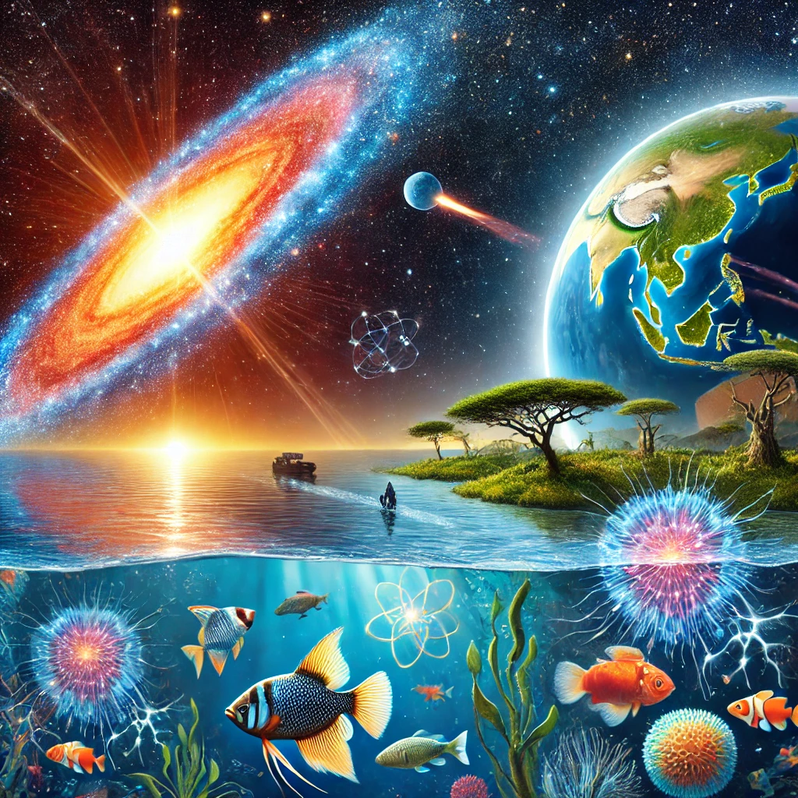

Eski bir süpernova ile Dünya’nın en büyük göllerinden birindeki virüs çeşitliliği arasındaki ilginç bağlantı, çılgın kozmik olayların gezegenimiz üzerindeki etkisinin tahmin edilenden daha büyük olabileceğini düşündürüyor. Yeni bir çalışma, patlayan bir yıldızdan gelen radyasyonun Dünya’daki yaşamın evrimi üzerinde derin bir etkisi olabileceğini öne sürüyor. Yaklaşık 2,5 milyon yıl önce, Afrika’daki Tanganika Gölü’nde balıkları enfekte eden virüsler gizemli ve hızlı bir çeşitlenme sürecine girdi. Ancak bu değişimin kesin nedeni bugüne kadar belirsizliğini koruyordu.
Şimdi, yeni bir araştırma, göldeki virüs çeşitliliğindeki artışın, aynı dönemde gezegenimizin antik bir süpernovadan gelen kozmik ışınlarla bombardımana uğramasıyla aynı zamana denk geldiğini ortaya koydu. Araştırmacılar bulgularını 17 Ocak’ta The Astrophysical Journal Letters dergisinde yayımladı. “Bu kadar uzak olayların yaşamımızı veya gezegenimizin yaşanabilirliğini nasıl etkileyebileceğini görmek gerçekten büyüleyici,” diyor çalışmanın baş yazarı ve Kaliforniya Üniversitesi, Santa Cruz’da astrofizikçi olan Caitlyn Nojiri. “Diğer çalışmalardan radyasyonun DNA’ya zarar verebileceğini biliyoruz. Bu, evrimsel değişiklikler veya hücrelerde mutasyonlar için bir hızlandırıcı olabilir.”
Tanganika Gölü ve Evrimsel Çeşitlilik
Doğu Afrika’daki Büyük Rift Vadisi’nde yer alan Tanganika Gölü, gezegendeki en büyük tatlı su göllerinden biridir. Yaklaşık 32.900 kilometrekarelik bir alanı kaplayan göl, dört ülkeyi—Burundi, Demokratik Kongo Cumhuriyeti, Tanzanya ve Zambiya’yı—birbirinden ayırıyor. Göl, Dünya üzerinde başka hiçbir yerde bulunmayan 2.000’den fazla türe ev sahipliği yapıyor. Dünya Koruma Birliği’ne göre, “Dünya üzerinde hiçbir yer böyle bir yaşam çeşitliliğine sahip değil.” Çalışmanın yazarları, bu çeşitliliği yönlendiren faktörlerden birinin radyasyon olabileceğini öne sürüyor. Bilim insanları, uzaydaki yüksek enerjili parçacıklar olan kozmik ışınların astronotların hücrelerine zarar vererek hızlandırılmış yaşlanmaya neden olabileceğini zaten biliyor. Ayrıca, bu parçacık bombardımanlarının, biyomoleküllerin kiralite olarak bilinen yapısal tercihini şekillendirmede rol oynayabileceği de düşünülüyor. Ancak, bu uzay ışınlarının evrim tarihindeki rolü hala büyük ölçüde keşfedilmemiş bir alan. Bu soruyu araştırmak için, yeni çalışmanın arkasındaki bilim insanları deniz tabanından alınan çekirdek örneklerini inceledi. Numunelerin, genellikle yıldız patlamaları sırasında üretilen demir-60 izotopu bakımından zengin olduğu ortaya çıktı. Radyoaktif tarihlendirme teknikleriyle bu izotopun iki ayrı yaşa sahip olduğu belirlendi: biri 6,5 milyon yıl öncesine, diğeri ise 2,5 milyon yıl öncesine ait.
Süpernova Kaynağının İzini Sürmek
Araştırmacılar, bu izotopun kaynağını belirlemek için Güneş’in Samanyolu içindeki hareketlerini simüle ettiler. Yaklaşık 6,5 milyon yıl önce, Güneş Sistemi’nin, Orion Kolu’ndaki Yerel Kabarcık olarak bilinen, patlayan yıldızların kalıntılarıyla dolu düşük yoğunluklu bir bölgeden geçtiğini keşfettiler. Daha sonra yapılan analizler, 2,5 milyon yıl önceki ikinci demir-60 zirvesinin büyük olasılıkla bir süpernova patlamasından kaynaklandığını ortaya koydu. Bu süpernovanın ya Dünya’dan 460 ışık yılı uzaklıktaki Scorpius-Centaurus grubundan ya da 230 ışık yılı uzaklıktaki Tucana-Horologium grubundan gelmiş olabileceği belirlendi. Yakın Dünya’daki bir yıldız patlamasının simülasyonunu gerçekleştiren bilim insanları, böyle bir olayın ilk patlamadan sonra 100.000 yıl boyunca Dünya’ya kozmik ışınlar yağdıracağını ve bu modelin tortulardaki izotop artışlarıyla uyumlu olduğunu tespit etti. Varsayımları doğruysa ve bu olay gerçekten yaşandıysa, süpernovadan gelen radyasyonun Dünya atmosferine nüfuz edecek kadar güçlü olması muhtemeldir. Bu radyasyon, DNA ipliklerini kopararak mutasyonları ve genetik çeşitliliği artırmış olabilir. Böylece, Tanganika Gölü’nde keşfedilen virüs çeşitliliği patlaması ile bu kozmik olay arasında bir bağlantı kurulabilir.

Kozmik Olayların Evrim Üzerindeki Rolü
Araştırmacılar, bu bağlantının kesin olmadığı konusunda temkinli davranıyor, ancak bu tür güçlü kozmik olayların gezegenimizdeki yaşamı şekillendirmiş olabileceği ihtimalini artırdığını belirtiyorlar. “Bu olayların doğrudan bağlantılı olduğunu söyleyemeyiz, ancak aynı zaman dilimine denk geliyorlar,” diyor Nojiri. “Virüslerdeki çeşitlilik artışının bu dönemde yaşanmış olmasını ilginç bulduk.” Bu bulgular, evrim süreçlerinin yalnızca Dünya’daki çevresel değişkenlerle değil, aynı zamanda kozmik olaylarla da etkileşime girebileceğini gösteriyor. Eğer süpernovalar gerçekten de evrimsel değişiklikleri hızlandırabiliyorsa, bu, Dünya’daki yaşamın şekillenmesinde düşündüğümüzden çok daha fazla dışsal faktörün etkili olduğu anlamına gelebilir.